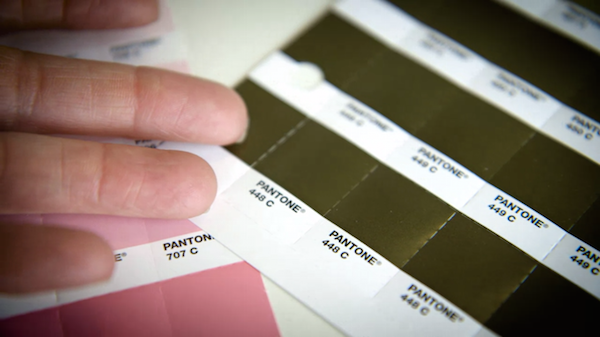

Pantone 448 C, also known as the "The ugliest colour in the world", is a colour in the Pantone colour system. Described as a "drab dark brown", it was selected in 2016 as the colour for plain tobacco and cigarette packaging in Australia, after market researchers determined that it was the least attractive colour.
The Australian Department of Health initially referred to the colour as "olive green", but the name was changed after concerns were expressed by the Australian Olive Association.
Since 2016, the same colour has also been used for plain cigarette packaging in France, the United Kingdom, Israel, Norway, New Zealand, Slovenia, Saudi Arabia and Turkey.
It's become something of a phenomenon in the colour world. Google "Pantone 448 C," and mixed in among the news stories about its use in packaging are plenty of impassioned defenses, like this one.